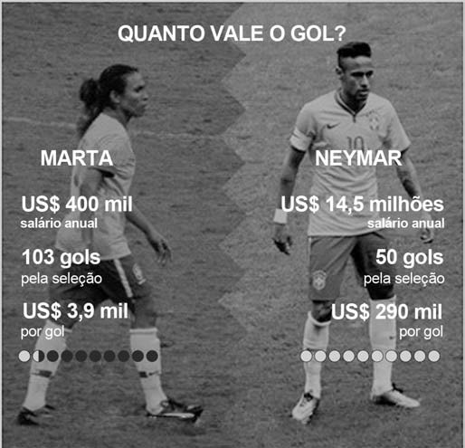

O suor para estar em competições nacionais e internacionais de alto nível é o mesmo para homens e mulheres, mas não raramente as remunerações são menores para elas. Se no tênis, um dos esportes mais equânimes em termos de gênero, todos os principais torneios oferecem prêmios idênticos nas disputas femininas e masculinas, no futebol a desigualdade atinge seu ápice. Neymar e Marta são dois expoentes dessa paixão nacional. Ela já foi eleita cinco vezes a melhor jogadora do mundo pela Fifa. Ele conquistou o terceiro lugar na última votação para melhor do mundo. Mas é na conta bancária que a diferença entre os dois se sobressai.
 Disponível em: http://apublica.org. Acesso em: 9 ago. 2017 (adaptado).O esporte é uma manifestação cultural na qual se estabelecem relações sociais. Considerando o texto, o futebol é uma modalidade que